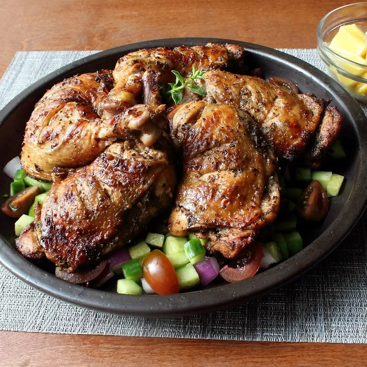

Grilled Greek Chicken

This is so flavorful that you really don't need a sauce,
but some fresh lemon is nice, as is a spicy yogurt.
Just squeeze a little lemon into some nice thick, Greek yogurt,
spike it with hot sauce, and you have a perfect condiment.
- Ingrediants
- 6 cloves garlic (or more to taste), crushed or very finely minced
- 2 tablespoons dried oregano
- 1 teaspoon red pepper flakes, or to taste
- 1 teaspoon freshly ground black pepper
- ½ cup lemon juice
- ¼ cup olive oil
- 1 tablespoon distilled white vinegar
- 6 chicken leg quarters
- 1 lemon, cut into wedges
- Directions
- Step 1: garlic, oregano, red pepper flakes, black pepper, lemon juice, olive oil, and vinegar together in a large bowl.
- Step 2: Make 2 slashes on the skin side down to the bone in the thigh section and 1 in the leg section of each leg quarter. This will help infuse pieces with marinade and allow faster cooking on the grill. Season both sides of chicken generously with kosher salt. Transfer to bowl with marinade and thoroughly coat all sides. Cover and marinate in refrigerator 4 to 12 hours.
- Step 3: Transfer chicken to paper-towel-lined sheet pan to drain slightly.
- Step 4: Place leg quarters on grill skin side down over semi-direct heat (avoid intense direct heat so chicken cooks evenly and skin doesn't burn). Cook 6 or 7 minutes. Turn chicken and cook another 6 to 7 minutes. Continue cooking and turning until internal temperature reaches 165 degrees F (74 degrees C), 8 to 10 more minutes. Serve with lemon wedges.
Go back HOME